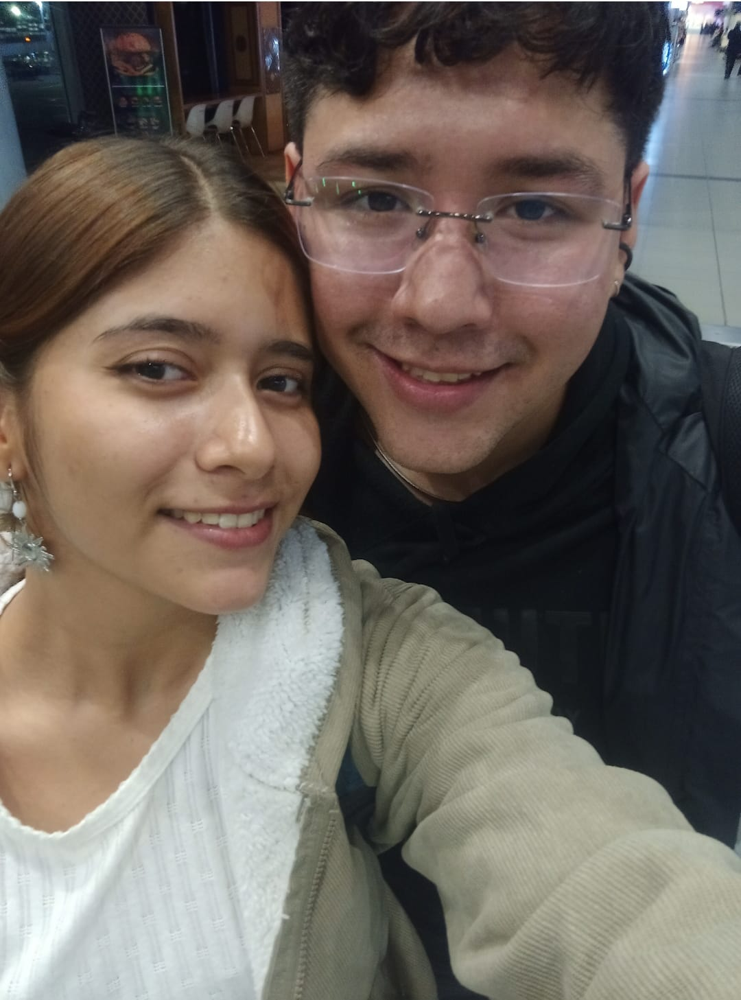
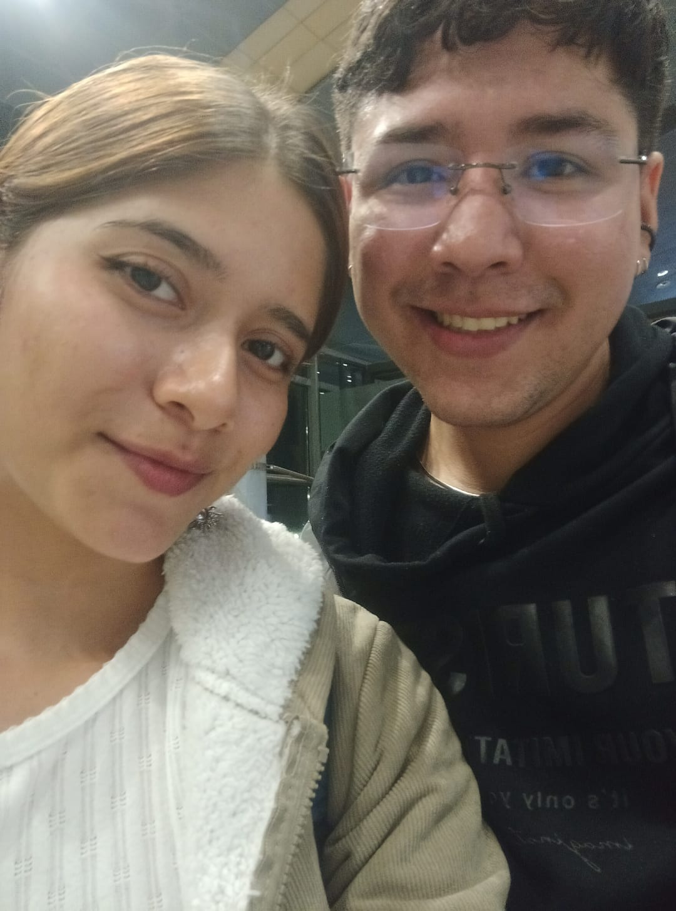

Un reencuentro muy grato <3
Las acciones hablan más que las palabras, y que me hayas ido a visitar al aeropuerto
sabiendo el poco tiempo que tenía para poder vernos... Es algo que nunca olvidaré,
y no solo esa vez, siempre, siempre visitandome cuando podias en la universidad,
haciendome compañía en la heladería mientras trabajaba.
Aunque mi manera de demostrar amor sea los actos de servicios, el contacto físico o los detalles,
tu manera de demostrarme tu amor ha sido estar presente. Y buscar siempre una manera.


Tampoco olvido que me llevaste unos ricos maicitos y arepita para
que probara lo que tanto comias y te gustaba en esos momentos, y eso nos define,
querer que el otro pruebe y conozca lo que nos gusta